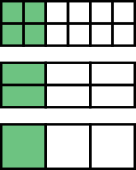

Una fracción representa una parte de un todo
Ejemplo: la siguiente imagen se representaría por la la fracción \( \frac{2}{5} \).
El numerador indica cuántas partes se toman, mientras que el denominador muestra en cuántas partes se divide el todo.
Ejemplo: en \( \frac{2}{5} \), el numerador es 2 y el denominador es 5.
1 Representa las siguientes fracciones. Indica el numerador y denominador de cada una de ellas.
2 Expresa en forma de fracción las siguientes figuras. Indica el numerador y denominador de cada una de ellas.
Dos fracciones son equivalentes si representan la misma cantidad.
Por ejemplo, \( \frac{4}{12} \), \( \frac{2}{6} \) y \( \frac{1}{3}\)son equivalentes.
Podemos cosntruír fracciones equivalentes multiplicando (ampliación) o dividiendo (reducción) numerador y denominador entre el mismo número.
3 Para cada una de las siguientes fracciones, indica dos fracciones equivalentes por ampliación y dos por reducción.
Una fracción irreducible es aquella que no se puede simplificar más.
Para simplificar una fracción, divide el numerador y el denominador por su máximo común divisor .
4 Calcula la fracción equivalente irreducible de las siguientes fracciones:
Es habitual necesitar calcular fracciones equivalentes de un conjunto de fracciones para conseguir que todas tentan el mismo denominador.
Para calcular el denominador común más bajo podemos hacer el mínimo común múltiplo
5 Pasa a común denominador las siguientes parejas de fracciones:
Para sumar o restar fracciones con el mismo denominador, solo se suman o restan los numeradores y se mantiene el denominador.
6 Representa cada una de las siguientes fracciones y calcula su suma o resta:
Para sumar o restar fracciones con diferente denominador, conviértalas a un denominador común antes de operar.
7 Realiza las siguientes sumas y restas de fracciones:
Para multiplicar fracciones, multiplica los numeradores y los denominadores (en línea)
Para dividir fracciones, multiplica por el inverso de la segunda fracción (en cruz)
8 Calcula los siguientes productos y cocientes de fracciones:
Para resolver expresiones con múltiples operaciones con fracciones, sigue el orden de las operaciones:
9 Realiza las siguientes operaciones combinadas con fracciones:
Para comparar fracciones con el mismo denominador, observa los numeradores; para fracciones con el mismo numerador, observa los denominadores.
10 Indica cuál de las siguientes parejas de fracciones es mayor:
Para comparar fracciones con diferentes numeradores y denominadores hay que usar el común denominador.
11 Ordena las siguientes fracciones de menor a mayor: